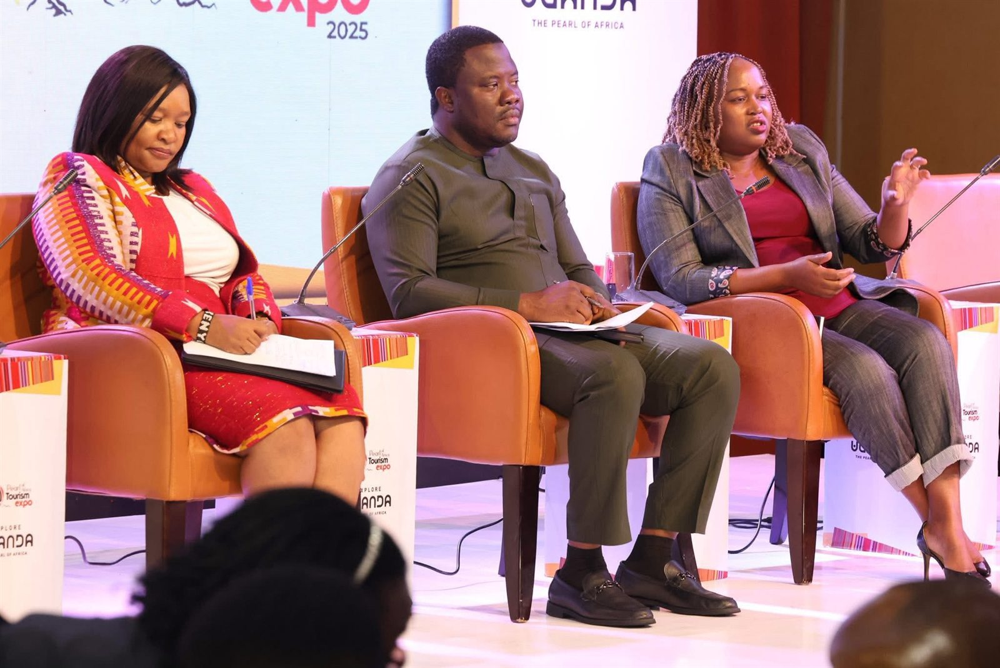

Chapter 04 · The Gallery
In the field, every week.
Moments from community durbars, ministerial engagements, courtesy calls and the day-to-day work of representing Ayawaso North. Photographs from the official Facebook page.

The GalleryFrom the field